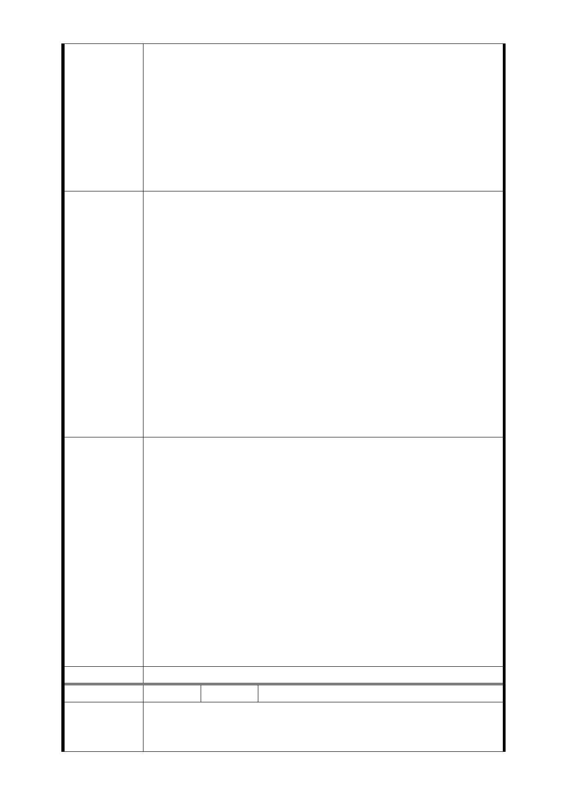

所需變更面積大卻土地徵購經費少，此乃違反比例原則，
疑本都市計畫經費編列乃有侵犯萬大線相關土地權益人
之權益。
4. 未有不動產市場評估：本都市計畫需有土地開發之行為，
然本都市計畫卻未有相關不動產市場評估資訊（如：市場
交易每平方公尺房價），未來此土地難以評估有償債之能
力。在未來土地開發有極大不確定因素，實不宜進行都市
計畫變更以都市計畫法第二十七條第一項第四款進行都
市計畫變更，提高未來土地開發之風險係數。
1. 建議計畫單位，應以行政區為畫分，以兩行政區分別擬訂
、變更都市計畫並制定都市計畫書，以符合都市計通盤檢
討之精神。
2. 建議計畫單位，應明確指出本計畫之上位計畫以明確指出
本計畫未違反上位計畫。
3. 建議計畫單位，應明確指出本計畫所明訂之聯合開發土地
週遭地區不動產市場分析，以符合行政院核定本捷運計畫
建 議 辦 法 「自償能力」之土地開發行為。
4. 建議計畫單位，應明確向臺北市政府捷運工程局確認土地
開發區（捷）變更之經費編列違反比例原則並有侵犯民眾
土地權益之嫌，應予糾正。
5. 本人建議，本計畫相對於其他縣市及同縣市的捷運開發計
畫都市計畫變更顯現粗糙，應全數退回併重新擬定以降低
土地開發風險以及都市計畫之弊端，以建構良好的都市計
畫架構。
1. 萬大線 LG01 站位於南海路地下，本府捷運工程局規劃於
南海路北側及南側各設置 1 座出入口並均設置無障礙電梯
，出入口在優先使用公有土地之原則下，於車站西端、南
海路之北側規劃使用保六總隊辦公廳舍大樓基地之開放
空間設置 1 座出入口。
2. 依據運量為滿足正常營運及緊急逃生所需，需設置另 1 座
市 府 回 應 捷運出入口，惟南側出入口所需面積最少需 650 平方公尺
意 見 （僅計算地面突出物及地下結構體），經本府捷運工程局
現場勘查，南海路、南昌路口之南昌路派出所面積不足（
面積約 190 平方公尺）。
3. 103 年 9 月 16 日第四次專案小組委員審查意見：捷四土地
開發區（剔除面臨南海路側土地，修訂面積為 2821 平方
公尺）、增設捷十一土地開發區（南門市場大樓，面積 3944
平方公尺）。
委員會決議 同編號交一－1 委員會決議。
編 號 捷四-3A 陳情人 張鄧○妹、李蔡○玉
100.12.16
陳 情 理 由 主旨：捷運萬大線工程變更沿線土地為交通用地及土地開發
區（捷）主要計畫案及擬劃定都更地區細部計畫案，陳情意
- 22 -